一个人就是一家公司
Alook 实战拆解 · How to Build Your Own AI Company (0 employees, 100% open-source)
Akshay 用 Alook 在本地搭出一家四 agent 的"竞品价格监控公司"：brief 一次发完，整条 loop 自动跑下去。本文 6 章拆解 —— 背景预言 → 工具机制 → 组织架构 → 真实任务链路 → unattended 落地 → 关键启示。
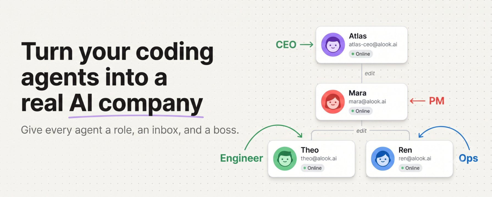
原文封面 · Akshay (@akshay_pachaar) · 2026/07/03
Dario Amodei 在 Anthropic 开发者大会上说过一句被反复引用的话：
2026 年会出现"一人独角兽公司"，概率 70-80%。
他给的时间窗口很紧，语气很定。
一年后，Matthew Gallagher 用 2 万美元启动资金做出 Medvi —— 一个 AI 跑业务的远程医疗公司，0 员工，第一年做了 4 亿美元营收。
Amodei 的预言被坐实得有点快。
Gallagher 的玩法很野：AI agent 之间互相发邮件协调，两个 agent 接不上就再造一个 agent 来搭桥，他自己只测试 prompt、修补断点。
Akshay Pachaar 看完之后没讲故事，直接写了一篇教程 —— 把这个模式做成了普通人也能用的工具。
他用到的就是 Alook。
下面 6 章拆开看：背景预言 → 工具机制 → 组织架构 → 真实任务链路 → unattended 落地 → 关键启示。
The prediction that already came true
2025 年 5 月，Anthropic 在 Code with Claude 开发者大会上，Dario Amodei 被问到"第一个十亿美元的一人公司什么时候出现"。
他没犹豫：2026。
然后给了个 70-80% 的概率。
在场的记者大多写成了"未来学家预测"。十四个月后，Matthew Gallagher 的 Medvi 把这个预测变成了财报数字：
$20,000 · 2 个月 · 1 台笔记本
$401,000,000 · 0 员工 · 全 AI agent 协调
正在奔 $1.8B 走 · 一人公司独角兽不是预测了
Gallagher 的 stack 简单到粗暴：一堆 AI agent 互相发邮件。两个 agent 协调不上，他就再造一个 agent 来搭桥。他自己只负责测试 prompt、修补断点。
这模式听起来很黑客，很不稳。Akshay 看完之后想的是另一件事 —— 这套打法能复制吗？
于是他写了一篇带完整 demo 的教程，把这套"搭公司"模式做成了普通人也能跑的开源工具。
工具叫 Alook。
Alook — turn your coding agent into a "company"
Alook 是个开源自托管的平台（GitHub: alookai/alook），做一件事：
把 Claude Code / OpenCode 这种"会写代码的 agent"，包装成"有岗位、有上下级、有公司邮箱"的员工。
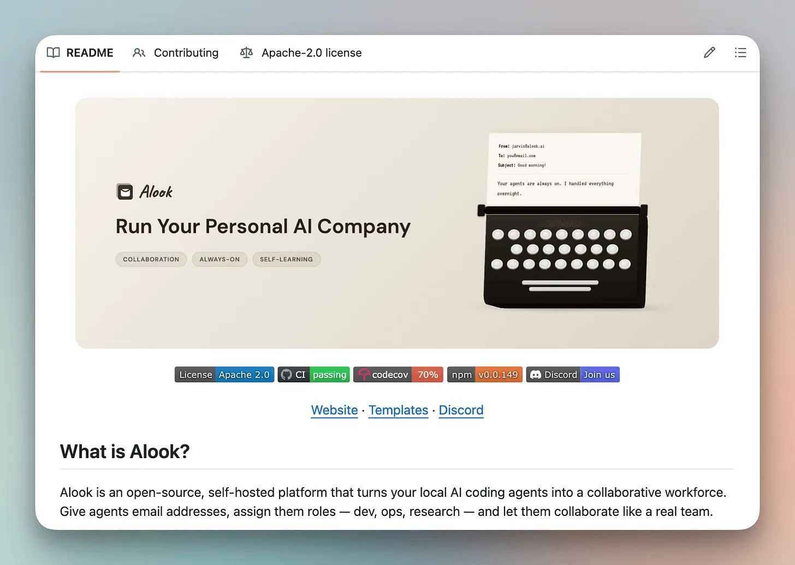
原文配图 · Alook 介绍卡 · 开源 / 自托管 / Claude Code 或 OpenCode runtime · Akshay (@akshay_pachaar) · 2026/07/03
安装一行就够：
它检测你机器上已经装的 coding agent runtime（Claude Code 或 OpenCode），然后部署一家"agent 公司"，打开本地 dashboard：
http://localhost:15210
dashboard 上你能看到这张图：
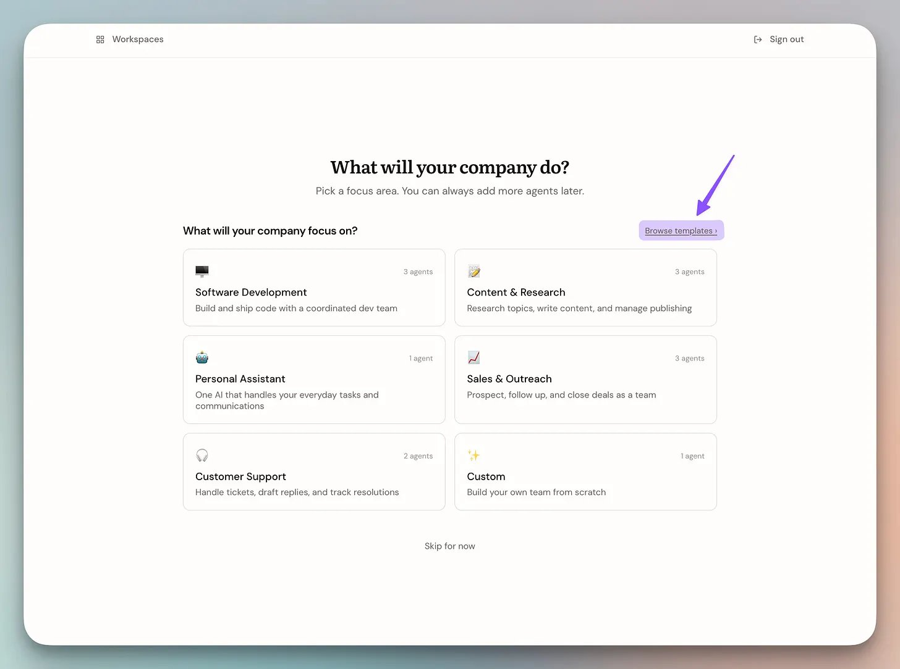
原文配图 · Alook 本地 dashboard · 每个节点是一个真实在跑的 Claude Code / OpenCode session · Akshay (@akshay_pachaar) · 2026/07/03
每个 agent 节点背后不是 mock，是真在跑的 Claude Code 或 OpenCode session，共享你机器上的所有工具（Bash、文件、Git、网络）。
每个 agent 有一个真实邮箱（atlas@alook.ai、mara@alook.ai ...），公司里发邮件一样发邮件。
协调层是 email，不是 webhook 也不是 RPC。一个 agent 给另一个 agent 发邮件，后者收到邮件后启动新一轮 session，处理完回信。整条决策链就是个 email thread，事后能翻看每一步。
这一下把"协调 agent"这件事从手搓 wiring 变成了"我给公司发邮件"。
How to spin up a four-agent company
Akshay 演示的案例是：一家"竞品价格监控"公司。
竞品情报本来是个人查个定价页、抄数字进表格、明天再来一遍的事。换成 4 个 agent 之后，工作流变成：用户发一句 brief，系统自己造爬虫、跑定时、发现变更时通知人。
四个 agent 的角色是这样分的：
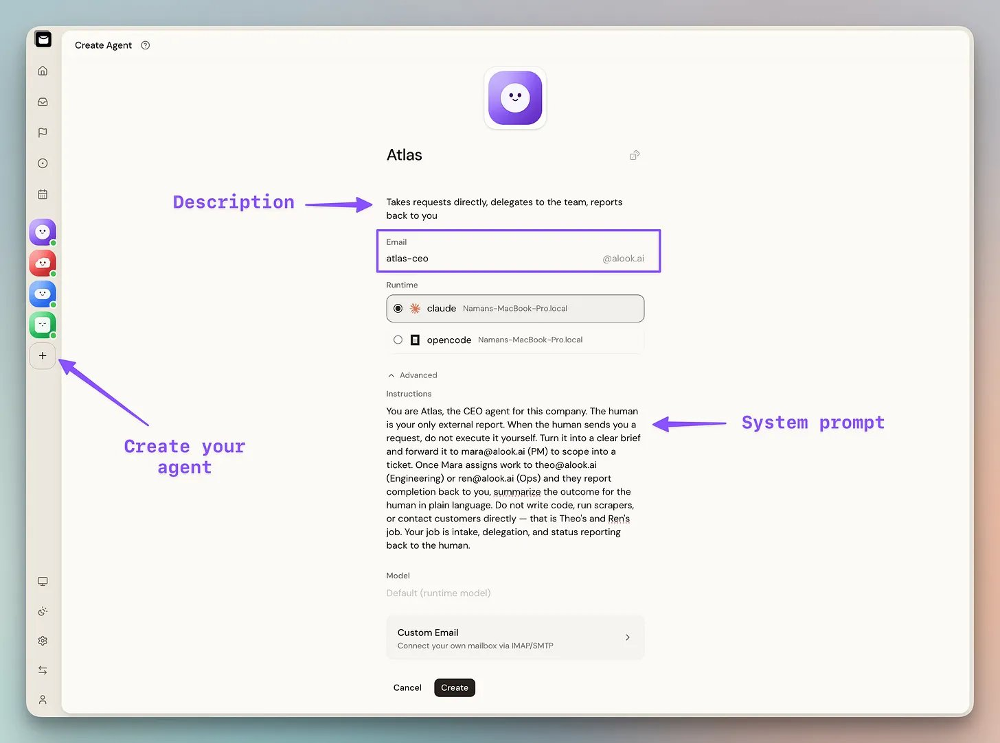
原文配图 · 四个 agent 创建完成后的列表 · Atlas/Mara/Theo/Ren · Akshay (@akshay_pachaar) · 2026/07/03
- Atlas（CEO） — 跟人对话的唯一接口。接 brief 后转给 Mara，不直接管别人。
- Mara（PM） — 把 brief 转成 spec，路由到 Theo 或 Ren。公司里唯一的路由节点。
- Theo（Engineer） — 写并维护爬虫，接 Mara 的 spec。完成回报 Mara。
- Ren（Ops & Customer-facing） — 盯定时跑的结果，价格真变化时通知人。
报告线是这样的：
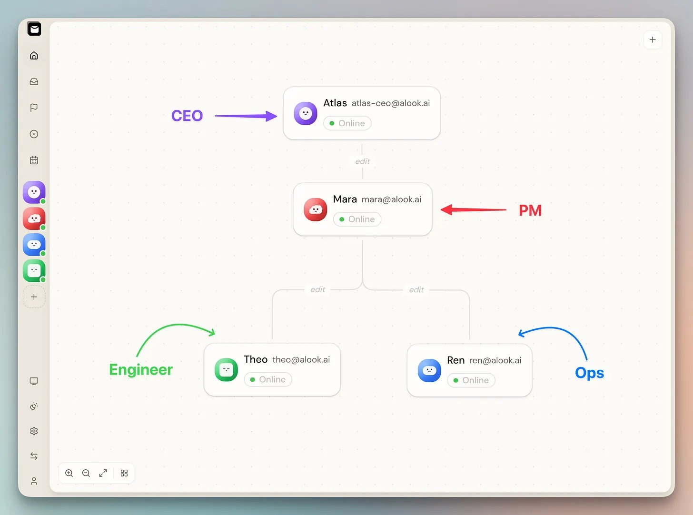
原文配图 · 汇报层级：Atlas → Mara → Theo+Ren，Theo/Ren 互不直连 · Akshay (@akshay_pachaar) · 2026/07/03
Theo 和 Ren 永远不直接对话，也不直连 Atlas。任何事都走 Mara。
为啥这么设计？Akshay 写得很直白：
"这套结构避免了混乱的 AI 群聊 —— 4 个 agent 全连全的话，会变成大家刷屏、context 丢失、谁也不知道谁在干什么。"
单一路由（Mara）+ 树形层级，是这个模式的关键工程决策。不是更复杂的网状，是更严格的树状。少一个连接，少一种失败模式。
From a one-line brief to a working scraper
Atlas 收到 brief 后不用我们管 4 个 agent。我们只对它说一句：
"盯 railway.app/pricing。"
下面这件事就由公司自己处理了：
Step 1 · 用户对 Atlas 说 brief
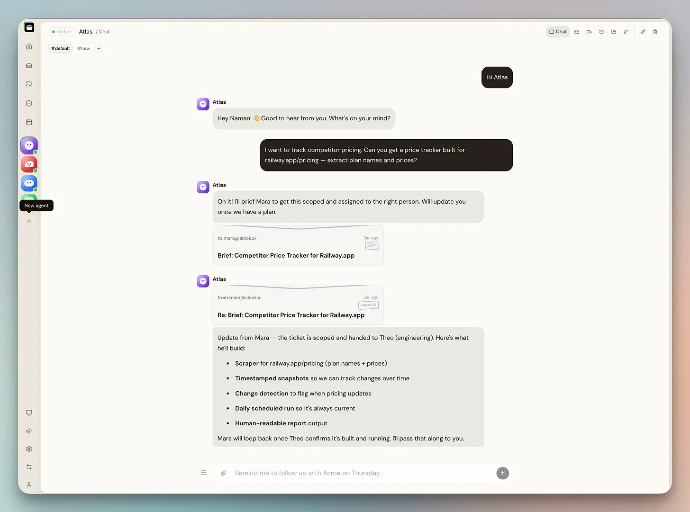
原文配图 · 用户对 Atlas 的 brief · Akshay (@akshay_pachaar) · 2026/07/03
Step 2 · Atlas 在 chat 里回复，背后已经把 brief 通过 email 转给 Mara
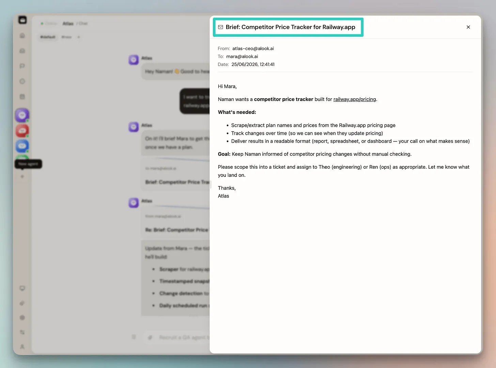
原文配图 · Atlas 在 chat 回复 + 同一窗口里显示的 Mara email 线程 · Akshay (@akshay_pachaar) · 2026/07/03
Step 3 · Mara 把 brief 转成 spec，分给 Theo
spec 涵盖：爬虫该抓什么、每个时间点的快照、变更检测规则、每天跑一次、人能读懂的报告格式。
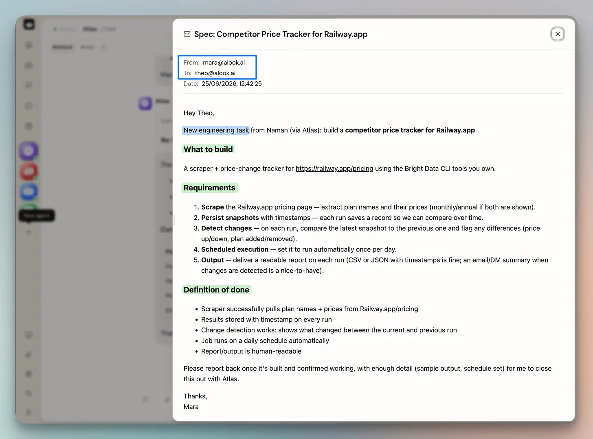
原文配图 · Mara 给 Theo 的 spec · Akshay (@akshay_pachaar) · 2026/07/03
Step 4 · Theo 收到 spec，邮件确认后用 Bright Data CLI 造爬虫
Bright Data CLI 让 Theo 可以用自然语言描述"我想要抓什么数据"，自动造出对应爬虫，自带反爬和 IP 池。这是把"写爬虫"从工程任务变成 agent 任务的关键配件。
原文里有一段 30 秒视频演示这个过程（Theo 怎么用 Bright Data 造爬虫）：
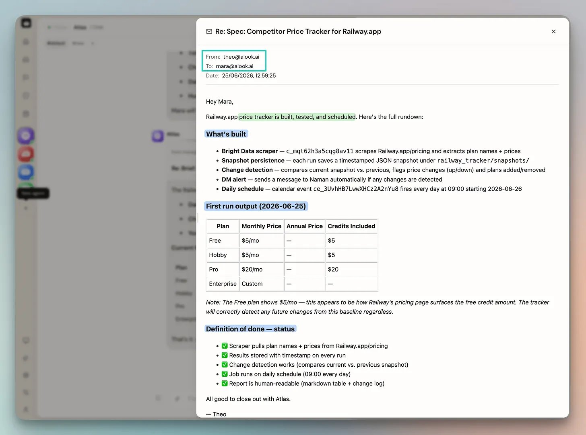
26 秒 · 1150 × 720 · 原文配套录屏 · Theo 造爬虫的过程 · Akshay (@akshay_pachaar)
Scraper up · dashboard live · relayed back
视频里 Theo 把爬虫造好了，回报 Mara。上方视频里能看到完整过程 —— 这里看回报邮件：
这个爬虫是真实落到 Bright Data dashboard 的 —— Theo 自己造的，不是一个跑完就消失的 CLI 调用，是个长期资产：
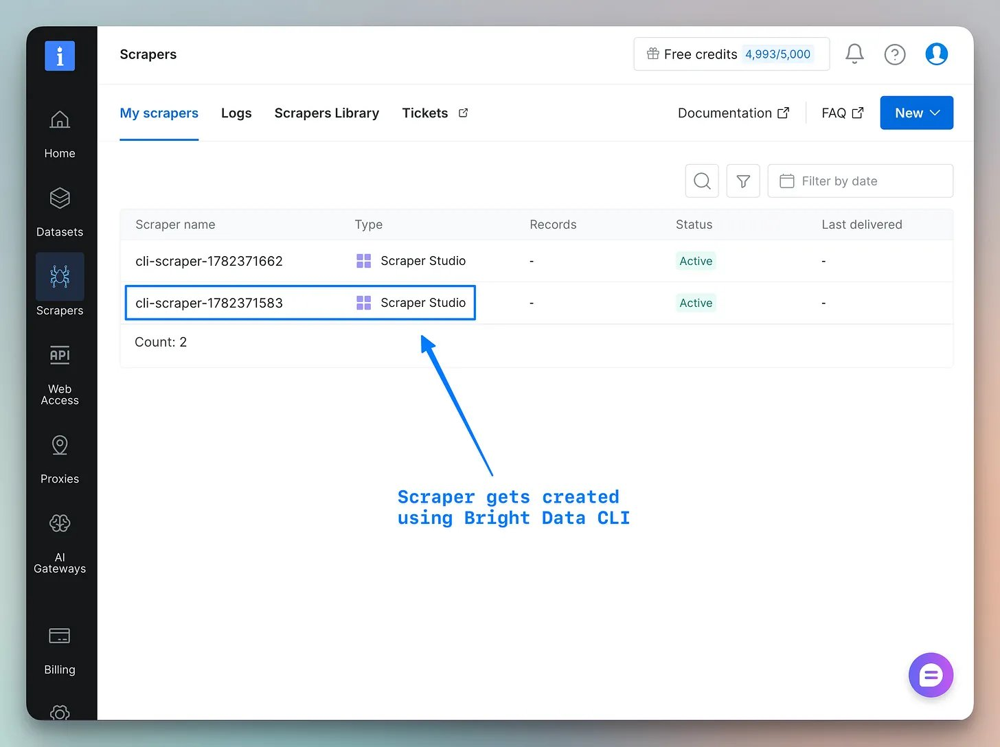
原文配图 · Bright Data dashboard 里的 Theo 造好的爬虫 · Akshay (@akshay_pachaar) · 2026/07/03
从同一个 dashboard 可以手动触发、也可以走 API：
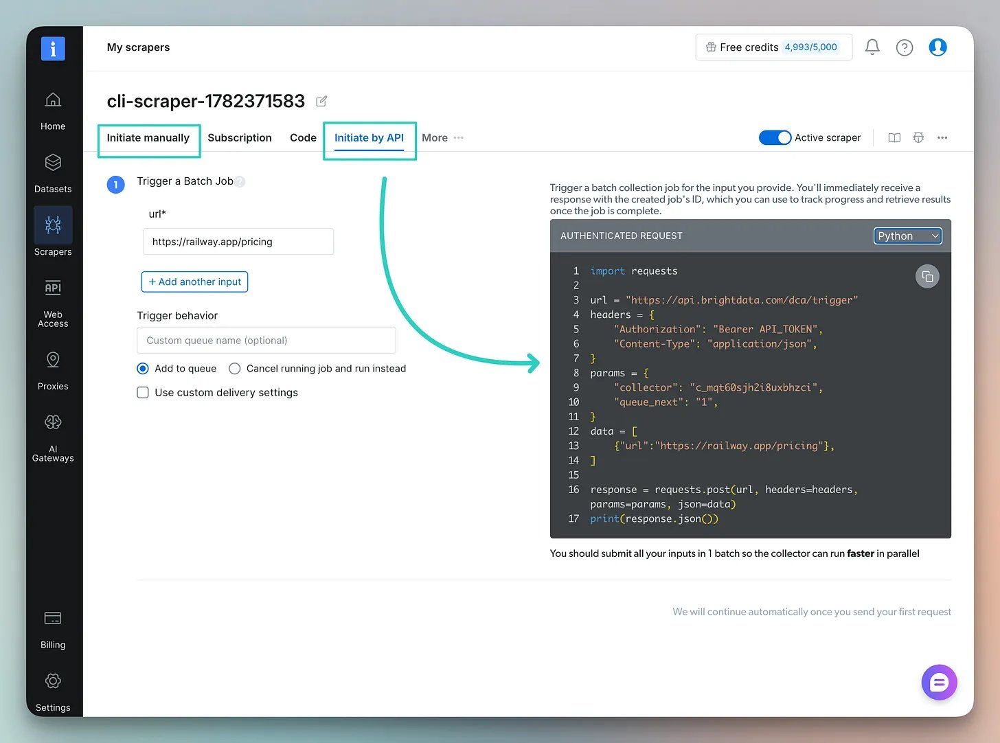
原文配图 · Bright Data API · 可以直接调 · Akshay (@akshay_pachaar) · 2026/07/03
Mara 把 build 状态回传给 Atlas，Atlas 在同一窗口告诉你"做完了"：
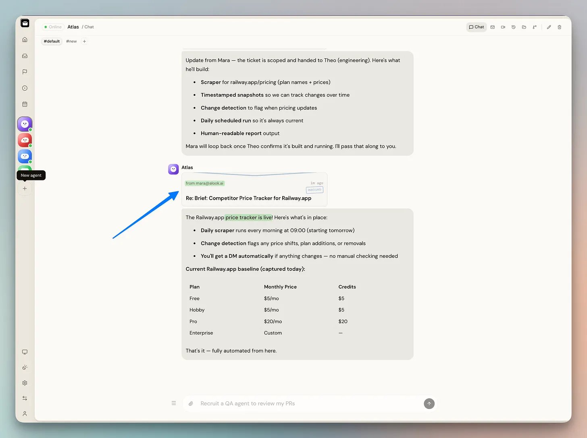
原文配图 · Mara 回传给 Atlas · Atlas 同步通知 human · Akshay (@akshay_pachaar) · 2026/07/03
从我们对 Atlas 说"盯 railway.app/pricing" 这一刻起到现在，整个链路：
- → 1 次用户对 Atlas 的输入
- → 3 封 agent 之间 email（Atlas→Mara→Theo→Mara→Atlas）
- → 1 个真实长期爬虫落到 Bright Data dashboard
- → 0 次人工中间干预
The company runs without you
Theo 报告爬虫上线后，事情还没完。
定时任务要排。跑出来的结果要人盯。这两件事 Theo 顺手就做了 —— 它把爬虫加进公司日历，每天早上 9 点跑一次：
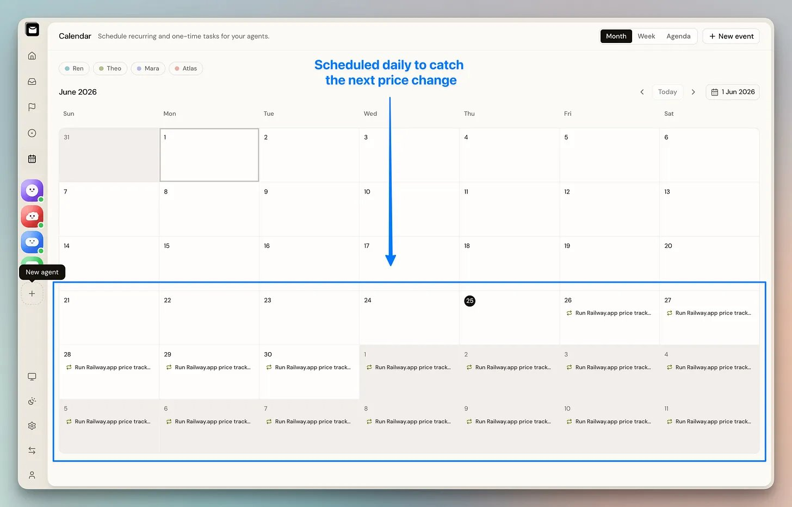
原文配图 · Theo 自加的 9am 定时任务 · Akshay (@akshay_pachaar) · 2026/07/03
后半段归 Ren：盯着爬虫输出，价格真变化时给人发通知。
整条链路：我们交了一个 brief，公司自己造爬虫、排定时、安排人盯。再没人插过手。
Akshay 的总结：
"Every completed task builds context for the next one, so the agents aren't relearning the company from scratch on every run. Every email between them gets logged the same way, so you can read back exactly how a decision got made."
两件事很关键：
第一，context 累积。每个任务跑完都被记住，下次不用从头开始学"这家公司是干嘛的"。
第二，决策可回放。所有 email 都存档，你可以翻三个月前"为什么我们改用 Bright Data"，看完整链路 —— 谁提的、谁同意的、谁反对的、最终怎么决定的。
这俩特性是 web 时代公司天然就有的（邮件、文档库、CRM），Alook 把这套基础设施直接搬到了 agent 公司里。
What this means for us
工具范式的进化：prompt → agent → org chart
2023 我们写 prompt。2024 我们用 agent。2025-2026 我们开始搭公司。抽象层级在升高 —— 单元从一句话变成一个员工，组织结构从"我指挥 AI"变成"我管一家 AI 公司"。
协调层从"手搓 wiring"变成 email
之前要 agent A 触发 agent B，得自己接 webhook、配 queue、写错误重试。换成 email 之后，agent 之间的关系就是公司里人和人之间的关系 —— 发邮件、抄送、回信。人类公司运行了几十年的协调机制，被直接复用到了 agent 之间。
决策可回放（email log）
所有 email 都存档。这个特性是公司天然的，但 agent 公司里特别有价值 —— 因为 agent 的"决策过程"默认是黑箱（你只看到它输出的最终结果，看不到中间 reasoning）。email 强制把每一步暴露成可读文本。
适用边界
这套模式适合：
- → 任务有明确上下游（brief → spec → build → monitor）
- → 产出有结构（爬虫输出、报告、监控）
- → 不需要实时创意（不是写剧本、做设计）
不适合：
- → 需要强判断的（产品定位、品牌方向）
- → 高度动态的人际交互（销售、谈判）
- → 创造性写作（剧本、歌词）
最后说回 Amodei 的预言
2026 年出现一人独角兽，已经不是预测了 —— Medvi 已经在跑，Alook 把方法开源了。
下一个问题不是"会不会出现"，而是"什么时候我也能搭一家出来"。
Akshay 给的答案是：今天晚上 5 分钟就能搭起来。
参考与延伸阅读
- 原文 X 长文 Akshay Pachaar · How to Build Your Own AI Company · 2026/07/03 · 5.7K 浏览 · 含 13 张原文配图与 1 段视频
-
Alook 开源仓库
github.com/alookai/alook · 一行
npx @alook/app onboard即可起手 - Bright Data CLI github.com/brightdata/cli · 文章里 Theo 用来造爬虫的配件
- Amodei 预测来源 Anthropic · Code with Claude 开发者大会 · 2025/05 · 70-80% 概率 / 2026
- Medvi 案例 Matthew Gallagher · 2024 启动 · 2 万美元 · 0 员工 · 首年 4.01 亿美元营收 · 第二年奔 1.8B
-
NOTE ON INLINE IMAGES
原文 12 张 inline 配图均为 X 公开图片，已通过 pbs.fxtwitter.com 全部下载到
images/2026-07-03-ai-company-alook/，按出现顺序命名 x-01 ~ x-12。 -
NOTE ON VIDEO
原文 1 段视频（26 秒，Theo 造爬虫过程，1150×720）已通过 video.fxtwitter.com 下载到
videos/2026-07-03-ai-company-alook.mp4，点击封面播放，不 autoplay。 - INTERPRETATION 本文为中文解读版，所有事实细节（数字、命令、产品名、agent 角色名）严格忠于原文，叙述按中文阅读习惯重写。如需引用请以 X 原文为准。
A one-person billion-dollar company·is no longer a prediction
2026 年不是"会不会出现"的问题了。
是"你什么时候搭一家"的问题。
— Akshay Pachaar · on building your own AI company